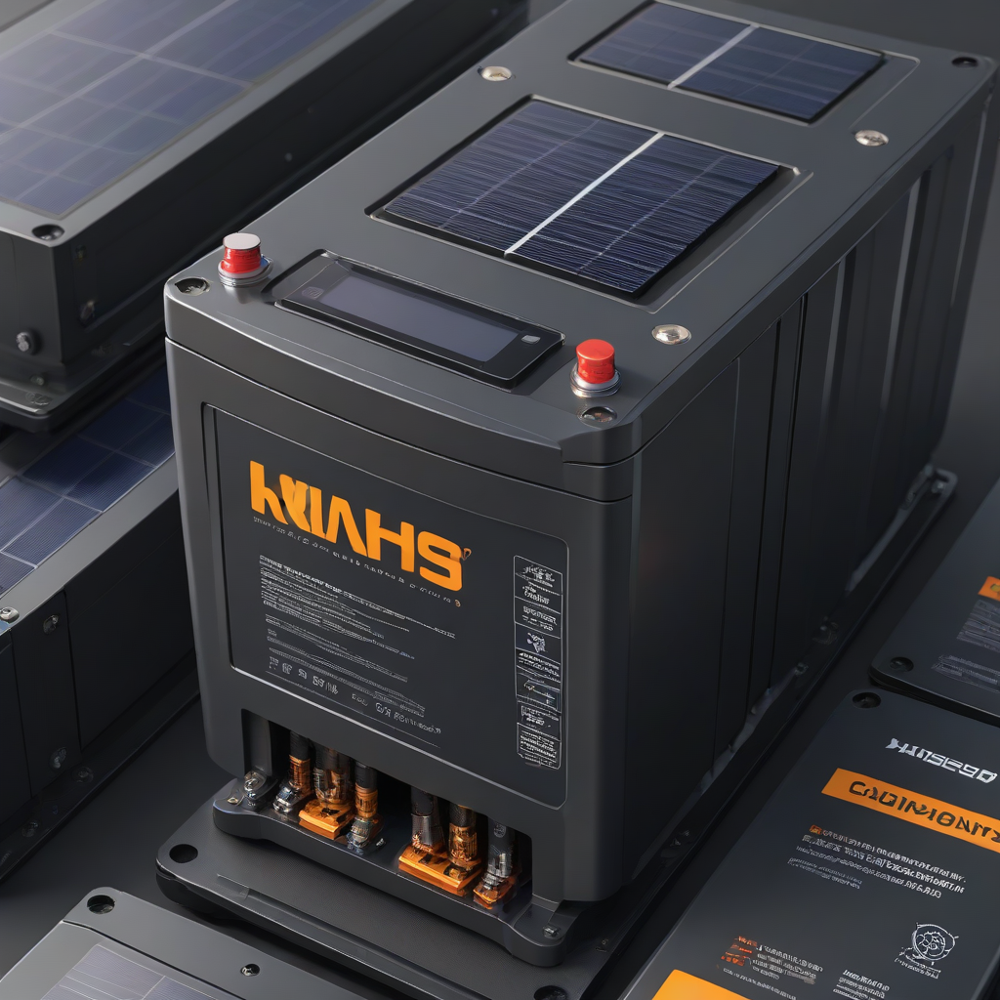
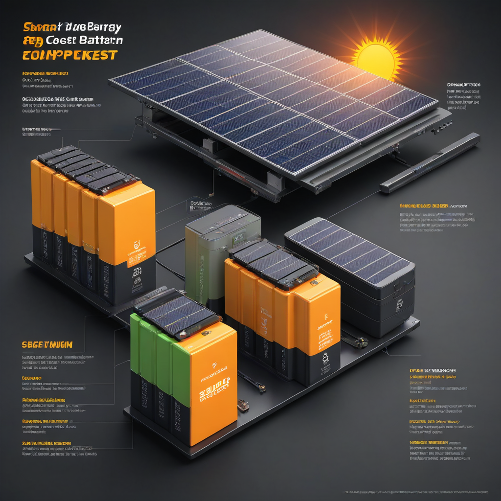

Installing solar panels alone is no longer the end of the journey for most U.S. homeowners. With rising electricity rates and more frequent grid outages, adding a solar battery is becoming a smart, mainstream upgrade. But before you commit, you need one critical number: the solar battery cost per kWh. This metric tells you the real value you’re getting—not just the sticker price, but what each kilowatt-hour of usable storage actually costs you.
Unlike panel costs—which have fallen steadily for over a decade—battery prices have been more volatile due to supply chain shifts and rising demand. However, 2026 brings new efficiencies, more competition, and new state-level incentives that make it one of the most cost-effective years yet to add storage. Whether you’re preparing for blackouts, maximizing self-consumption, or planning for future electric vehicles, understanding this number helps you avoid overpaying.
In this guide, we cut through the marketing noise and give you actionable, up-to-date 2026 pricing, real-world comparisons, and clear guidance on sizing, warranties, and return on investment. Let’s break down exactly how to calculate and evaluate solar battery cost per kWh—so you invest with confidence.
What Is Solar Battery Cost per kWh?

Solar battery cost per kWh is the total system cost (including installation) divided by the battery’s usable capacity—the actual energy you can draw from the battery, not its total gross capacity.
Key Components That Make Up the Total
- Hardware cost: The battery module itself (and often an inverter or interface unit)
- Installation labor: Typically 15–25% of total system cost
- Peripheral equipment: Monitoring systems, DC/AC wiring, structural mounts
- Permitting and inspection fees: Vary by county but average $200–$500
Why Homeowners Care
Comparing batteries solely by total price (e.g., “$12,000 for a Powerwa

Cost Breakdown (2026 Pricing)
Based on 2026 national averages (per EnergySage and SEIA data), here’s how much you can expect to pay:
2026 Battery Price Ranges (Installed, Pre-Credit)
- Entry-level LFP (Lithium Iron Phosphate): $350–$500 per usable kWh
- Mid-tier NMC (Nickel Manganese Cobalt): $450–$650 per usable kWh
- Premium integrated systems (e.g., Tesla): $550–$850 per usable kWh
Federal Solar Tax Credit (ITC)
The 30% federal Investment Tax Credit (ITC) applies to solar + storage installed on your primary residence, as long as the battery charges exclusively from solar. This credit slashes your net cost dramatically:
- Example: A $12,000 system → $8,400 after 30% credit
- 2026 ITC cap: No cap for residential systems
State Incentives to Maximize Savings
Many states stack additional rebates on top of the ITC:
- California (SGIP): Up to $2,000 per kWh (capped at 4 kWh for most homes)
- New York (SMART): Additional $0.20–$0.40/watt-hour for storage
- Texas (REAP grants): Up to $5,000 for qualifying low-income households
- Florida (local utility rebates): $100–$300/kWh (e.g., FPL’s “Solar Storage Rebate”)
Always check DSIRE USA for real-time local program eligibility.
Key Factors to Consider
Sizing Your Battery Correctly
Bigger isn’t always better. Use a solar battery sizing calculator to match your backup needs:
- Essential loads only (lights, fridge, router): 8–12 kWh
- Whole-home backup (excluding HVAC): 18–25 kWh
- Off-grid capable: 30–50+ kWh (requires larger solar array)
Efficiency Ratings Matter
Round-trip efficiency (AC-coupled) typically ranges from 85–95% in 2026:
- LFP chemistries: 92–95% (best for longevity)
- NMC chemistries: 85–90% (higher energy density, but less durable)
Lower efficiency means you lose more solar energy as heat—directly increasing your effective cost per kWh delivered.
Warranty Terms: Look for These
- Cycle warranty: Minimum 6,000 cycles at 80% DoD (Depth of Discharge)
- Time warranty: 10 years minimum (most top brands offer 10–15)
- Performance guarantee: 70% capacity retention at end of warranty
Always verify if the warranty covers full replacement or prorated—full replacement is essential for value preservation.
Top Options and Recommendations (2026)
Brand Comparison Table
| Brand & Model | Usable Capacity (kWh) | Installed Cost (Pre-Credit) | Cost/kWh (Pre-Credit) | Cycles (80% DoD) | Chemistry |
|---|---|---|---|---|---|
| Tesla Powerwall 2 | 13.5 | $13,500–$15,500 | $550–$700 | 7,000+ | NMC |
| Enphase IQ Battery 10 | 10.3 | $7,800–$9,200 | $425–$550 | 6,000 | LFP |
| Generac PWRcell Pro (M1) | 18.0 (modular) | $12,000–$14,000 | $330–$440 | 6,000 | LFP |
| SolarEdge Home Battery 10.2 | 10.2 | $7,200–$8,500 | $425–$550 | 6,000 | LFP |
Real User Reviews & Performance Data
Based on 2026 user data from EnergySage and SolarReviews:
- LFP batteries dominate top satisfaction scores (4.7/5) for safety and longevity
- Tesla users praise seamless app integration but cite high repair costs post-warranty
- Enphase leads in modular flexibility—add batteries later without replacing whole system
- Generac excels in whole-home backup scenarios (tested to 15+ kW surge)
For independent performance data, see NREL’s 2026 Battery Technologies Office Report.
Frequently Asked Questions
Is solar battery storage worth it in 2026?
Yes—if you match the system to your needs. For grid-tied homeowners in areas with net-metering changes (like California’s NEM 3.0), batteries help maximize self-consumption. For outage-prone regions (TX, FL, Midwest), backup value is undeniable. Calculate your payback: most systems now pay back in 7–12 years, with 20+ years of operation left.
How long do solar batteries last?
LFP batteries last 10–15 years (or 6,000–10,000 cycles). NMC typically lasts 8–12 years. Degradation is ~2–3% per year—meaning you’ll still have 80–85% capacity at end of warranty. Proper ventilation and avoiding constant 100% charging extend life.
Do solar batteries need maintenance?
Modern lithium batteries are virtually maintenance-free. No fluid checks, no equalization charges. Just ensure:
- Ventilation (especially for non-sealed units)
- Temperatures stay between 32°F–104°F (0°C–40°C)
- Software updates (via app or installer)
Can I add a battery to my existing solar system?
Absolutely. Most modern batteries are AC-coupled, meaning they connect to your home’s panel via your existing inverter. DC-coupled systems require a compatible hybrid inverter—but many installers offer retrofit kits. Your solar provider can audit your array and recommend the right interface.
What’s the best battery for whole-home backup?
Look for:
- High surge capacity (≥10 kW)
- Modular scalability (e.g., Generac, Enphase)
- 100% DoD capability (most LFP supports this)
- Integration with generator or grid reconnection logic
Conclusion
In 2026, solar battery cost per kWh has dropped significantly thanks to LFP chemistry adoption, competition, and federal/state incentives. You can now access $250–$450 per usable kWh after credits—making storage a financially sound upgrade for resilience and optimization.
Action Steps for You
- Run your load profile through our sizing calculator
- Compare 3 local quotes—focus on cost per usable kWh, not total price
- Apply for the 30% federal ITC and local rebates before year-end
- Choose LFP chemistry for longest life and safety
Further Reading